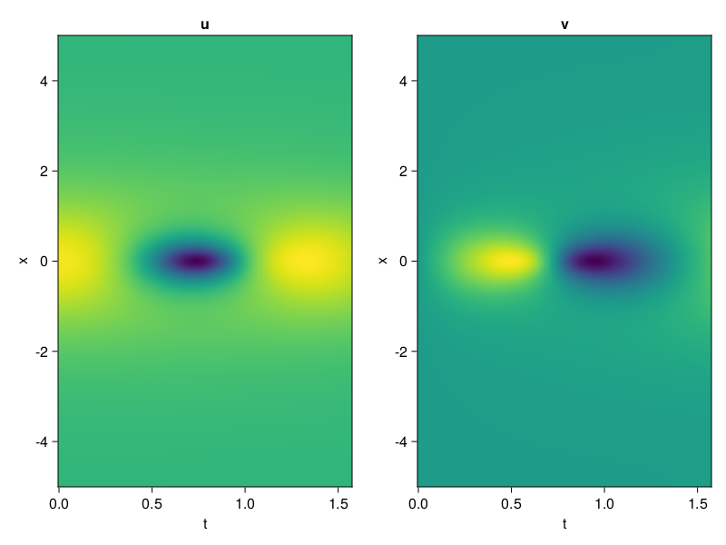
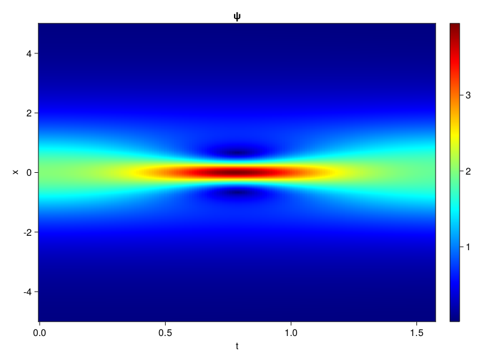

Schrödinger equation
The nonlinear Shrödinger equation is given by
\[\mathrm{i} \partial_t \psi=-\frac{1}{2} \sigma \partial_{x x} \psi-\beta|\psi|^2 \psi\]
Let $\sigma=\beta=1, \psi=u+v i$, the equation can be transformed into a system of partial differential equations
using ModelingToolkit, IntervalSets, Sophon, CairoMakie
using Optimization, OptimizationOptimJL
@parameters x,t
@variables u(..), v(..)
Dₜ = Differential(t)
Dₓ² = Differential(x)^2
eqs=[Dₜ(u(x,t)) ~ -Dₓ²(v(x,t))/2 - (abs2(v(x,t)) + abs2(u(x,t))) * v(x,t),
Dₜ(v(x,t)) ~ Dₓ²(u(x,t))/2 + (abs2(v(x,t)) + abs2(u(x,t))) * u(x,t)]
bcs = [u(x, 0.0) ~ 2sech(x),
v(x, 0.0) ~ 0.0,
u(-5.0, t) ~ u(5.0, t),
v(-5.0, t) ~ v(5.0, t)]
domains = [x ∈ Interval(-5.0, 5.0),
t ∈ Interval(0.0, π/2)]
@named pde_system = PDESystem(eqs, bcs, domains, [x,t], [u(x,t),v(x,t)])\[ \begin{align} \frac{\mathrm{d}}{\mathrm{d}t} u\left( x, t \right) =& - \frac{1}{2} \frac{\mathrm{d}}{\mathrm{d}x} \frac{\mathrm{d}}{\mathrm{d}x} v\left( x, t \right) - \left( \left|u\left( x, t \right)\right|^{2} + \left|v\left( x, t \right)\right|^{2} \right) v\left( x, t \right) \\ \frac{\mathrm{d}}{\mathrm{d}t} v\left( x, t \right) =& \frac{1}{2} \frac{\mathrm{d}}{\mathrm{d}x} \frac{\mathrm{d}}{\mathrm{d}x} u\left( x, t \right) + \left( \left|u\left( x, t \right)\right|^{2} + \left|v\left( x, t \right)\right|^{2} \right) u\left( x, t \right) \end{align} \]
pinn = PINN(u = Siren(2,1; hidden_dims=16,num_layers=4, omega = 1.0),
v = Siren(2,1; hidden_dims=16,num_layers=4, omega = 1.0))
sampler = QuasiRandomSampler(500, (200,200,20,20))
strategy = NonAdaptiveTraining(1,(10,10,1,1))
prob = Sophon.discretize(pde_system, pinn, sampler, strategy)OptimizationProblem. In-place: true
u0: ComponentVector{Float64}(u = (layer_1 = (weight = [-0.27540886402130127 -0.2826912999153137; -0.3260236382484436 0.011283934116363525; … ; 0.3015006184577942 0.4441702365875244; -0.28035926818847656 -0.3175323009490967], bias = [0.0; 0.0; … ; 0.0; 0.0;;]), layer_2 = (weight = [0.17237135767936707 0.41386789083480835 … -0.40271225571632385 0.5608781576156616; 0.3582199811935425 -0.5564545392990112 … -0.1425405889749527 0.36884835362434387; … ; -0.49727320671081543 0.5206300616264343 … -0.42378902435302734 -0.060567766427993774; -0.06556639820337296 -0.5679459571838379 … -0.06190988048911095 -0.3807792663574219], bias = [0.0; 0.0; … ; 0.0; 0.0;;]), layer_3 = (weight = [-0.04983384907245636 0.32777878642082214 … -0.10790011286735535 0.5626412034034729; 0.1714426428079605 0.3129582405090332 … 0.3408668339252472 -0.09752031415700912; … ; -0.1641654521226883 -0.49849244952201843 … -0.48807814717292786 0.22745832800865173; -0.23409932851791382 0.3091278374195099 … 0.20015527307987213 -0.08846307545900345], bias = [0.0; 0.0; … ; 0.0; 0.0;;]), layer_4 = (weight = [-0.359129935503006 -0.36408311128616333 … -0.5167234539985657 -0.5107083320617676; 0.5764375329017639 0.37513601779937744 … 0.11302058398723602 -0.5941385626792908; … ; 0.37689462304115295 0.4659670293331146 … -0.3511389493942261 0.35595273971557617; 0.4724133312702179 -0.47822853922843933 … -0.35665151476860046 -0.09915041923522949], bias = [0.0; 0.0; … ; 0.0; 0.0;;]), layer_5 = (weight = [0.2979186177253723 0.0440073162317276 … -0.0745786726474762 0.12927618622779846], bias = [0.0;;])), v = (layer_1 = (weight = [0.48014378547668457 -0.02198779582977295; -0.08610910177230835 -0.4441283345222473; … ; -0.23896676301956177 0.20652616024017334; -0.3172116279602051 0.2079557180404663], bias = [0.0; 0.0; … ; 0.0; 0.0;;]), layer_2 = (weight = [0.3681850731372833 -0.30650433897972107 … 0.18734776973724365 0.1610792726278305; 0.587864875793457 -0.06113242730498314 … 0.012170055881142616 0.3898850381374359; … ; -0.5473703145980835 0.11862599849700928 … -0.5320834517478943 -0.128129780292511; 0.2486478090286255 -0.2635139226913452 … -0.4373716413974762 0.17408686876296997], bias = [0.0; 0.0; … ; 0.0; 0.0;;]), layer_3 = (weight = [0.42488598823547363 -0.37596940994262695 … 0.32278972864151 0.6043851971626282; 0.38831159472465515 0.3225151598453522 … -0.03539494052529335 -0.06705882400274277; … ; -0.41686710715293884 -0.38617298007011414 … 0.3630759119987488 0.1464560478925705; -0.5072970390319824 0.3730580806732178 … -0.007434295956045389 0.337311714887619], bias = [0.0; 0.0; … ; 0.0; 0.0;;]), layer_4 = (weight = [0.236382856965065 -0.36166298389434814 … 0.5590646266937256 0.22171062231063843; -0.4909239709377289 0.354916512966156 … 0.2841763496398926 0.5981135964393616; … ; -0.4883696138858795 -0.6034838557243347 … 0.5098053216934204 0.45240023732185364; 0.022252224385738373 0.15278080105781555 … 0.1776195764541626 -0.1427740454673767], bias = [0.0; 0.0; … ; 0.0; 0.0;;]), layer_5 = (weight = [0.0526299886405468 0.4171246588230133 … -0.06631539016962051 0.41267791390419006], bias = [0.0;;])))Now we train the neural nets and resample data while training.
function train(pde_system, prob, sampler, strategy, resample_period = 500, n=10)
bfgs = BFGS()
res = Optimization.solve(prob, bfgs; maxiters=2000)
for i in 1:n
data = Sophon.sample(pde_system, sampler)
prob = remake(prob; u0=res.u, p=data)
res = Optimization.solve(prob, bfgs; maxiters=resample_period)
end
return res
end
res = train(pde_system, prob, sampler, strategy)u: ComponentVector{Float64}(u = (layer_1 = (weight = [-0.3626961757825373 0.08857772770107117; 0.17837128580973038 -0.3512612705001347; … ; 0.3398846052077391 0.4441050394917751; -0.30048558831303196 -0.45093527116686677], bias = [-0.07234324264440985; 0.12148507783258718; … ; -0.2018394439097103; -0.05117181165483387;;]), layer_2 = (weight = [0.4252686278694033 0.3404764290696399 … -0.6834999945019133 0.7639802306717288; 0.40491493367314885 -0.772122881335086 … -0.08045255416985422 0.2698985641496485; … ; -0.6646586564108833 0.466209734730643 … -0.39323799823674005 -0.17986060318815622; -0.03328447403754384 -0.5016371958993986 … -0.0030722550918005943 -0.35431485990382316], bias = [-0.6389737847718524; -0.14121531450440622; … ; 0.21723354355577953; 0.031721380670713145;;]), layer_3 = (weight = [0.006717253586563556 0.3692611874454725 … 0.060959904933337035 0.35373510803064323; 0.1246084074971854 0.710719770824766 … 0.09231011731257233 0.1770286598745166; … ; -0.2051003870459656 -0.32091286913454165 … -0.7718019250022568 0.08175319511689293; -0.15307968431073493 0.39969928926679493 … 0.28976181463126655 -0.23798194329473796], bias = [-0.04684615354673008; -0.2931316877263379; … ; -0.08612068897459715; -0.11498291997249092;;]), layer_4 = (weight = [0.03230328748618276 -0.16431727230108514 … 0.019176096097121367 -0.6489046844569126; 0.2649396352158427 0.35331722954554484 … -0.09127623294185118 -0.3961590089913834; … ; 0.6611337245644527 0.3217798955897877 … -0.1733191530543256 -0.06150893434914348; 0.6249491774521456 -0.4446665086550252 … -0.21847078312241724 -0.08191784407307931], bias = [-0.21309389621521535; 0.1824033208884196; … ; -0.23751504272844004; -0.020714026204564143;;]), layer_5 = (weight = [0.369146536349116 -0.37753672081977163 … 0.8961618147338 0.47655459892570295], bias = [-0.44469173161235814;;])), v = (layer_1 = (weight = [1.0300246665686232 0.07487771936001472; 0.06929093619458535 -0.031721610406666774; … ; -0.4511830430912389 0.3522627795212855; -0.44848132610233277 0.15929437641299152], bias = [0.15666569825924578; -0.221300865737601; … ; -0.5366852368951913; 0.017283085329681286;;]), layer_2 = (weight = [0.20723280380553075 -0.39128356573013173 … 0.20535674879441498 0.25292792884827214; 0.40273438290204827 -0.017805384562644584 … -0.013192986061408923 0.44536373680913366; … ; -0.5687433618521123 0.20327179881919172 … -0.5071055689402353 -0.13845812667171015; 0.3434409535038591 -0.33540374153436325 … -0.19697706171796328 0.19528260338344466], bias = [0.09980407665477815; -0.11888398700978112; … ; -0.09112104299612649; 0.022943208091927313;;]), layer_3 = (weight = [0.4032017962114576 -0.28272425573780474 … 0.37229215851041014 0.8332654446623607; 0.35708438052308605 0.28941536983425403 … -0.39424721087697945 0.058354567008492286; … ; -0.5426829427659511 -0.5411050724544072 … 0.11590305582503592 -0.0017076907559012355; -0.5442526570748879 0.3112197137955868 … 0.015573768750242021 0.17836971888170416], bias = [0.2618638820959672; -0.29284167280348483; … ; -0.005762231772746794; 0.18502611265221575;;]), layer_4 = (weight = [0.10146557365345688 -0.3815101617334881 … 0.864002554682719 0.15201144842003336; -0.2138107220881197 0.1987954271565797 … -0.247830922569436 0.30382784924192957; … ; -0.14655644835624582 -0.4365483777893654 … 0.45554332753154547 0.46521277012991424; 0.25851429694648415 0.05842253497620444 … -0.05916966706449817 -0.16417527101155166], bias = [-0.311912259203234; -0.24109099539727288; … ; 0.10595400662316991; -0.08505400588811249;;]), layer_5 = (weight = [0.481463785246432 0.5415670782293631 … -0.2806092141303615 0.04312409189926414], bias = [-0.1439701253261191;;])))phi = pinn.phi
ps = res.u
xs, ts= [infimum(d.domain):0.01:supremum(d.domain) for d in pde_system.domain]
u = [sum(phi.u(([x,t]), ps.u)) for x in xs, t in ts]
v = [sum(phi.v(([x,t]), ps.v)) for x in xs, t in ts]
ψ = @. sqrt(u^2+ v^2)
axis = (xlabel="t", ylabel="x", title="u")
fig, ax1, hm1 = heatmap(ts, xs, u', axis=axis)
ax2, hm2= heatmap(fig[1, end+1], ts, xs, v', axis= merge(axis, (; title="v")))
display(fig)
axis = (xlabel="t", ylabel="x", title="ψ")
fig, ax1, hm1 = heatmap(ts, xs, ψ', axis=axis, colormap=:jet)
Colorbar(fig[:, end+1], hm1)
display(fig)
Customize Sampling
Bascially any sampling method is supportted. For example we can sample data according to the predicted solution.
using StatsBase
data = vec([[x, t] for x in xs, t in ts])
wv = vec(ψ)
new_data = wsample(data, wv, 500)
new_data = reduce(hcat, new_data)
fig, ax = scatter(new_data[2,:], new_data[1,:])
prob.p[1] = new_data
prob.p[2] = new_data
prob = remake(prob; u0 = res.u)
# res = Optimization.solve(prob, bfgs; maxiters=1000)OptimizationProblem. In-place: true
u0: ComponentVector{Float64}(u = (layer_1 = (weight = [-0.3626961757825373 0.08857772770107117; 0.17837128580973038 -0.3512612705001347; … ; 0.3398846052077391 0.4441050394917751; -0.30048558831303196 -0.45093527116686677], bias = [-0.07234324264440985; 0.12148507783258718; … ; -0.2018394439097103; -0.05117181165483387;;]), layer_2 = (weight = [0.4252686278694033 0.3404764290696399 … -0.6834999945019133 0.7639802306717288; 0.40491493367314885 -0.772122881335086 … -0.08045255416985422 0.2698985641496485; … ; -0.6646586564108833 0.466209734730643 … -0.39323799823674005 -0.17986060318815622; -0.03328447403754384 -0.5016371958993986 … -0.0030722550918005943 -0.35431485990382316], bias = [-0.6389737847718524; -0.14121531450440622; … ; 0.21723354355577953; 0.031721380670713145;;]), layer_3 = (weight = [0.006717253586563556 0.3692611874454725 … 0.060959904933337035 0.35373510803064323; 0.1246084074971854 0.710719770824766 … 0.09231011731257233 0.1770286598745166; … ; -0.2051003870459656 -0.32091286913454165 … -0.7718019250022568 0.08175319511689293; -0.15307968431073493 0.39969928926679493 … 0.28976181463126655 -0.23798194329473796], bias = [-0.04684615354673008; -0.2931316877263379; … ; -0.08612068897459715; -0.11498291997249092;;]), layer_4 = (weight = [0.03230328748618276 -0.16431727230108514 … 0.019176096097121367 -0.6489046844569126; 0.2649396352158427 0.35331722954554484 … -0.09127623294185118 -0.3961590089913834; … ; 0.6611337245644527 0.3217798955897877 … -0.1733191530543256 -0.06150893434914348; 0.6249491774521456 -0.4446665086550252 … -0.21847078312241724 -0.08191784407307931], bias = [-0.21309389621521535; 0.1824033208884196; … ; -0.23751504272844004; -0.020714026204564143;;]), layer_5 = (weight = [0.369146536349116 -0.37753672081977163 … 0.8961618147338 0.47655459892570295], bias = [-0.44469173161235814;;])), v = (layer_1 = (weight = [1.0300246665686232 0.07487771936001472; 0.06929093619458535 -0.031721610406666774; … ; -0.4511830430912389 0.3522627795212855; -0.44848132610233277 0.15929437641299152], bias = [0.15666569825924578; -0.221300865737601; … ; -0.5366852368951913; 0.017283085329681286;;]), layer_2 = (weight = [0.20723280380553075 -0.39128356573013173 … 0.20535674879441498 0.25292792884827214; 0.40273438290204827 -0.017805384562644584 … -0.013192986061408923 0.44536373680913366; … ; -0.5687433618521123 0.20327179881919172 … -0.5071055689402353 -0.13845812667171015; 0.3434409535038591 -0.33540374153436325 … -0.19697706171796328 0.19528260338344466], bias = [0.09980407665477815; -0.11888398700978112; … ; -0.09112104299612649; 0.022943208091927313;;]), layer_3 = (weight = [0.4032017962114576 -0.28272425573780474 … 0.37229215851041014 0.8332654446623607; 0.35708438052308605 0.28941536983425403 … -0.39424721087697945 0.058354567008492286; … ; -0.5426829427659511 -0.5411050724544072 … 0.11590305582503592 -0.0017076907559012355; -0.5442526570748879 0.3112197137955868 … 0.015573768750242021 0.17836971888170416], bias = [0.2618638820959672; -0.29284167280348483; … ; -0.005762231772746794; 0.18502611265221575;;]), layer_4 = (weight = [0.10146557365345688 -0.3815101617334881 … 0.864002554682719 0.15201144842003336; -0.2138107220881197 0.1987954271565797 … -0.247830922569436 0.30382784924192957; … ; -0.14655644835624582 -0.4365483777893654 … 0.45554332753154547 0.46521277012991424; 0.25851429694648415 0.05842253497620444 … -0.05916966706449817 -0.16417527101155166], bias = [-0.311912259203234; -0.24109099539727288; … ; 0.10595400662316991; -0.08505400588811249;;]), layer_5 = (weight = [0.481463785246432 0.5415670782293631 … -0.2806092141303615 0.04312409189926414], bias = [-0.1439701253261191;;])))